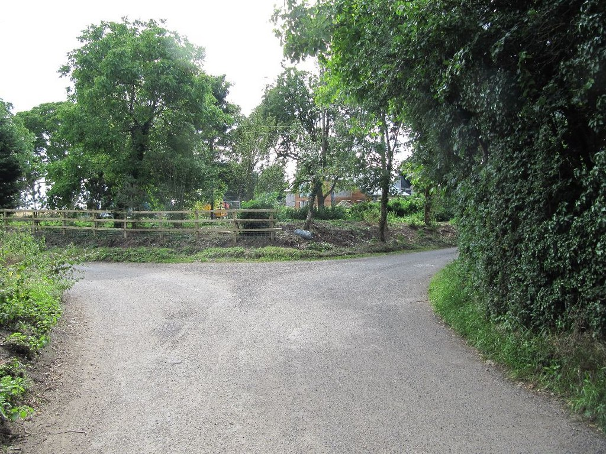
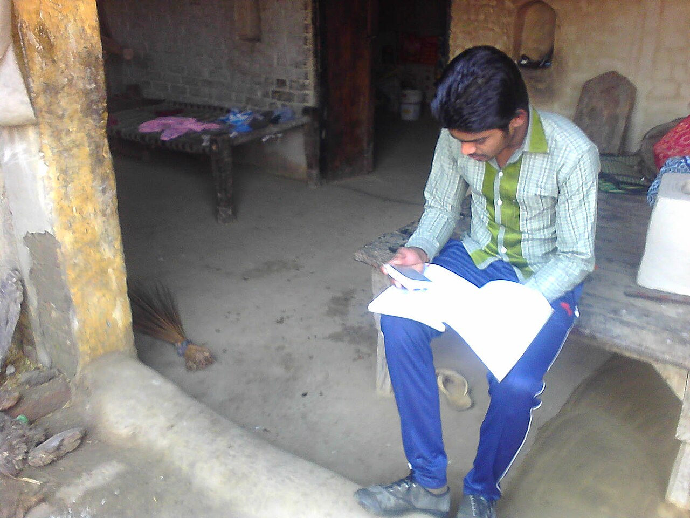
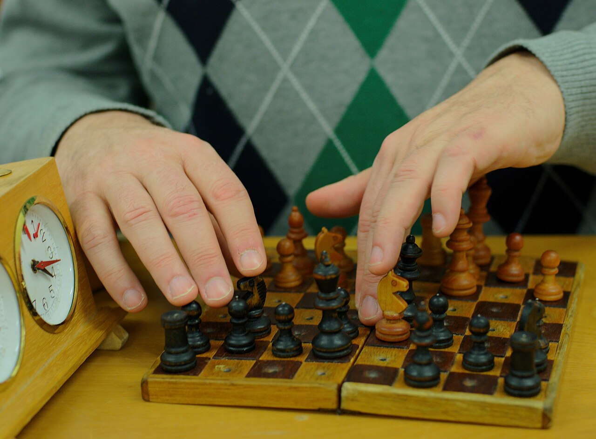
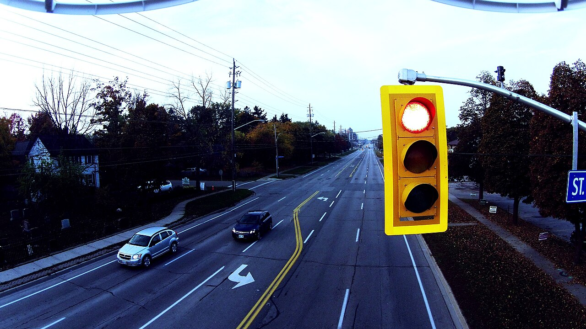
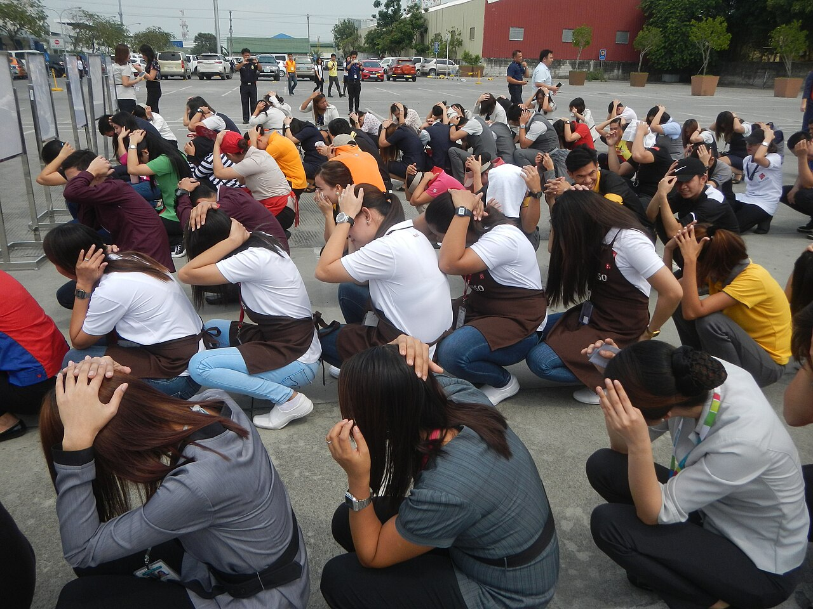
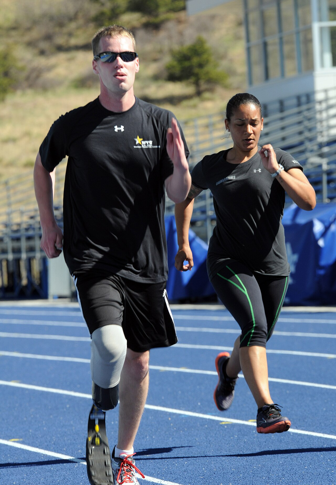

Önce Bak, Sonra Düşün
Bu ünitede her görsel bir soru sorar. Önce kendi cevabını yaz; kavramsal ipucu ancak ondan sonra açılır.

Bu görselde kader nerede başlıyor, irade nerede devreye giriyor?
Senin cevabın
Kavramsal ipucu
Yolun orada olması, nereye çıktığı, o gün havanın nasıl olduğu insanın seçmediği şeylerdir: Bunlar Allah’ın takdiri içindedir. Hangi yola sapılacağı ise iradenin alanıdır.
Bir ayrıntıya dikkat et: Yolu seçen kişi, yolların sonunu tam olarak göremez. Bu yüzden insan sonuçtan değil, seçiminden ve seçerken gösterdiği özenden sorumludur. Ünitenin bütün sorusu bu ayrımın içinde saklı.
Sence kader insanı bağlar mı, yoksa insan özgür müdür? İkisi aynı anda doğru olabilir mi?
Ünitenin sonunda, Düşünce Duvarı’nda onunla yeniden karşılaşacaksın.
Ünite Haritası
Ünitenin konuları, öğrenme çıktıları, anahtar kavramları ve ölçme-değerlendirme bileşenleri.
Kader ve Kaderle İlgili Kavramlar
- Kader–kaza, sünnetullah
- Afet, rızık, sabır, ömür–ecel
- Hastalık–sağlık, başarı–başarısızlık
- Hidayet–dalalet, hayır–şer
- Dua, tevekkül–teslimiyet, rıza, imtihan
- Yanlış kader anlayışı
Akıl, İrade ve Sorumluluk Sahibi Bir Varlık Olarak İnsan
- Temyiz ve tefrik kabiliyeti
- Özgürlük–hürriyet ve sınırları
- Mükellef olmak
- İlim, irade, kudret sıfatları ve insan özgürlüğü
- Tedbir, tevekkül ve iş sağlığı–güvenliği
Kur’an’dan Mesajlar: Bakara Suresi 286. Ayet
- Ayetin iniş bağlamı (Bakara 284-285)
- “Gücün yettiği ölçüde sorumluluk” ilkesi
- Ayetteki dua ve mesajları
- Amenerrasûlü
Öğrenme Çıktıları ve Süreç Bileşenleri
Resmî metin: MEB Türkiye Yüzyılı Maarif Modeli DKAB Öğretim Programı, 11. Sınıf 1. Ünite · tymm.meb.gov.tr
DKAB.11.1.1. Kader ve kaderle ilgili kavramları yapılandırabilme
- a) Kader ve kaderle ilgili kavramları inceleyerek nedensel ilişkiler ortaya koyar.
- b) Kader ve kaderle ilgili kavramlara dair elde ettiği bilgilere dayalı olarak bütüncül bir bakış açısı ortaya koyar.
DKAB.11.1.2. İnsan, akıl, irade ve sorumluluk kavramları arasındaki ilişki hakkında eleştirel düşünebilme
- a) İnsan, akıl, irade ve sorumluluk arasındaki ilişkiyi sorgular.
- b) İnsan, akıl, irade ilişkisi bağlamında insanın özgür ve sorumlu bir varlık olduğu ile ilgili akıl yürütür.
- c) İnsanın özgürlüğü ve sorumluluğu konusunda akıl yürütmeyle ulaştığı çıkarımları yansıtır.
DKAB.11.1.3. Bakara suresi 286. ayetin mesajlarını özetleyebilme
- a) Ayette verilen mesajlarla ilgili çözümleme yapar.
- b) Ayette geçen konuları sınıflandırır.
- c) Ayette verilen mesajları açıklar.
Ders Kitabı Etkinlikleri
| Etkinlik | Etkinliğin amacı | Öğrenme çıktısı | Süre |
|---|---|---|---|
| 1. Merak Ettiklerimi Soruyorum | Kaderle ilgili merak edilenleri sorgulayabilme | DKAB.11.1.1 | 30 dk. |
| 2. Helal Kazancın Önemi | Helal kazancın önemini kavrayabilme | DKAB.11.1.1 | 25 dk. |
| 3. Kaderle İlgili Kavramlar | Kaderle bağlantılı kavramların ilişkisini bütüncül bakışla yapılandırabilme | DKAB.11.1.1 | 25 dk. |
| 4. Yanlış Kader Anlayışı | Kaderin yanlış yorumlanmasından doğan sorunları sorgulayabilme | DKAB.11.1.1 | 35 dk. |
| 5. İnsan, Akıl, İrade ve Sorumluluk | İnsan, akıl, irade ve sorumluluk ilişkisini sorgulayabilme | DKAB.11.1.2 | 35 dk. |
| 6. Özgürlük ve Sorumluluk | İnsanın özgür ve sorumlu bir varlık olduğuna dair akıl yürütebilme | DKAB.11.1.2 | 35 dk. |
| 7. İnsanın Özgürlüğü ve Sorumluluğu | Akıl, irade ve sorumluluk ilişkisi hakkında eleştirel düşünebilme | DKAB.11.1.2 | 30 dk. |
| 8. Kur’an’ın Mesajını Anlıyorum | Bakara 286’daki mesajlar için meallere başvurabilme | DKAB.11.1.3 | 30 dk. |
Anahtar Kavramlar
Ünitede geçen ilgili kavramlar:
Beceriler, Eğilimler ve Değerler
Kavramsal beceriler: KB2.3. Özetleme, KB2.13. Yapılandırma, KB3.3. Eleştirel Düşünme
Eğilimler: E1.2. Bağımsızlık, E2.2. Sorumluluk, E3.8. Soru Sorma
Sosyal-duygusal öğrenme: SDB2.1. İletişim, SDB3.3. Sorumlu Karar Verme
Değerler: D11. Özgürlük, D5. Duyarlılık, D16. Sorumluluk
Okuryazarlık: OB2. Dijital Okuryazarlık
Disiplinler arası ilişki: Felsefe
Ölçme ve Değerlendirme
Araçlar: bilgi kartı, 3-2-1 kartı, dereceli puanlama anahtarı, öz değerlendirme formu, açık uçlu sorular.
Performans görevi: Kader, akıl, irade ve sorumluluk bağlamında başarı ve başarısızlık konulu köşe yazısı.
Süre: 1 hafta hazırlık + 1 ders saati · Ölçütler: bilgiyi kullanma, dil ve anlatım, kaynak kullanımı, kapsam geçerliliği.
1.1. Kader ve Kaderle İlgili Kavramlar
Bu hayat çizgisinde insanın seçebildiği şeyler hangileri?
- Çizgideki işaretlerden hangilerini sen seçersin?
- Hangileri seçimin dışında kalır ama sana karşı bir tutum almanı ister?
Senin cevabın
Kavramsal ipucu
Doğum yeri, aile, bir hastalık, bir deprem ve ecelin zamanı insanın seçimi değildir. Ömür ve ecel Allah’ın takdiridir. Arkadaşlar, okul, alışkanlıklar ve meslek ise cüz’î iradeyle seçilir.
Ama çizgi iki renk değildir: Hastalığı seçmezsin, tedavi olup olmamayı seçersin. Deprem senin elinde değildir, hazırlıklı olup olmamak elindedir. Kader ile irade çoğu olayda iç içedir. İnsan ecelini bilmediği için de ömrünün her anında sorumludur.
1.İnsan ve Evrendeki Düzen
İnsan; davranışlarında özgür olan, sorumluluk alabilen, en güzel biçimde yaratılmış değerli bir varlıktır. Yeryüzündeki düzenin korunması da insanın yükümlülüğündedir. Allah’ın (cc) evrene dair planını ve bu düzeni sürdürmesini ifade etmek için kader ve kaza kavramları kullanılır.
2.Kader ve Kaza
- Kader (sözlük)
- Gücü yetmek, planlamak, ölçü ile yapmak, bir şeyin şeklini ve niteliğini belirlemek.
- Kader (terim)
- Allah’ın (cc) sonsuz ilmi ve kudretiyle evrende olacak her şeyi planlaması, varlıkları dilediği şekilde yaratması, insanların özgür iradeleriyle yapacaklarını önceden bilip takdir etmesi.
- Kaza
- Hükmetme, karara bağlama; takdir edilen planın zamanı gelince gerçekleşmesi.
Örnek: Bir tohumun ne zaman filizleneceği, nasıl büyüyeceği ve ne tür bir ağaç olacağı kader; bu sürecin zamanı geldiğinde gerçekleşmesi kazadır.
3.Sünnetullah
Allah’ın (cc) evren ve içindeki varlıklarla ilgili koyduğu kurallar ve tabiat kanunlarıdır; Kur’an’da değişmez olduğu vurgulanır.
| Fiziksel yasa | Biyolojik yasa | Toplumsal yasa |
|---|---|---|
| Yer çekimi, gece ve gündüzün oluşumu | Canlıların doğması, büyümesi ve ölmesi | Kurallara uyulan toplumlarda düzenin sağlanması |
4.Afet
İnsan müdahalesi olmadan meydana gelen zararlardır (deprem, sel, kuraklık, salgın, yangın). Allah’ın (cc) takdiriyle gerçekleşir ve kader kapsamındadır; ancak insanın sorumluluğunu ortadan kaldırmaz. Plansız yapılaşma gibi tercihler, doğa olaylarının afete dönüşmesinde başlıca etkendir.
Doğa olayı ≠ afet. Deprem veya aşırı yağış insanın elinde olmayan doğa olaylarıdır. Bu olayların can ve mal kaybına yol açarak afete dönüşmesinde ise insanın tercihleri (plansız yapılaşma, denetimsizlik, tedbirsizlik) belirleyicidir.
Şûrâ 30 “Her musibet kişinin kendi suçudur.” demek değildir. Ayetin devamı Allah’ın (cc) çoğunu affettiğini bildirir; Hz. Eyyüb örneğinde olduğu gibi bazı sıkıntılar bir kusurdan değil, imtihandan kaynaklanır. Ayet, insanın tercih ve ihmallerinin sonuçlarından sorumlu olduğunu hatırlatır; başkasının musibetini onu suçlamak için kullanmak yanlıştır.
5.Rızık
Allah’ın (cc) canlılara verdiği maddi (yeme, içme, giyinme, barınma) ve manevi (huzur, sevgi, mutluluk) tüm nimetlerdir. Rızkı veren yalnızca Allah’tır (Rezzak). İnsanın görevi, rızkın gerçek sahibini bilmek ve helal kazanç için çalışmaktır.
6.Sabır
Hoşa gitmeyen olaylar ve insanı zorlayan durumlar karşısında Allah’a (cc) sığınarak direnç göstermektir. Olayların Allah’ın (cc) bilgisi ve planı dâhilinde olduğunu kabul eden insan daha güçlü ve dengeli durur. Allah’ın (cc) kullarına mühlet tanıması Sabûr esmasıyla ifade edilir.
7.Ömür – Ecel
Ömür doğumla ölüm arasındaki süre; ecel bu sürenin sonu, ölüm anıdır. Ecel Allah (cc) tarafından belirlenir ve değişmez.
İnsan ecelini bilmez; ondan istenen, sebeplere uymak ve tedbir almaktır. Kendini bile bile tehlikeye atmak Kur’an’da yasaklanmıştır: “…Kendi ellerinizle kendinizi tehlikeye atmayın…” (Bakara suresi, 195. ayet). Emniyet kemeri takmak ya da tedavi olmak ecele karşı gelmek değil, insanın sorumluluğunu yerine getirmesidir.
8.Hastalık – Sağlık
Sağlık bir nimet, hastalık bir imtihandır. İnsan her ikisini de ilahi takdir olarak kabul eder; sağlığını korumak için tedbir alır, hastalıkta hem tedavi arar hem de sabır ve tevekkül gösterir.
9.Başarı – Başarısızlık
İnsan hedefleri için aklı ve hür iradesiyle çaba gösterir ve tercihlerinden sorumludur; sonucu takdir eden Allah’tır (cc). Başarı ancak emek ve doğruluk temelinde değer kazanır; hile ve hak ihlaliyle elde edilen başarı meşru değildir.
Düşün: Çok çalıştığı hâlde başarısız olan birini kaderle nasıl açıklamalıyız? → “Çok çalıştı ama başarısız oldu” etkinliği

Sınava hazırlanan bir öğrenci
- Bu öğrencinin kontrolünde olan kaç şey görüyorsun?
- Sonuç tamamen onun kontrolünde midir?
- Çaba ile sonuç arasındaki ilişki nedir?
Senin cevabın
Kavramsal ipucu
Çalışma süresi, yöntemi, düzeni, dikkatini toplaması ve dinlenmesi öğrencinin kontrolündedir: Bunlar tercih, çaba ve tedbirdir. Soruların zorluğu, sınav günü başına gelebilecekler ve diğer adayların durumu ise onun kontrolünde değildir.
Çaba, sonucun en güçlü sebeplerinden biridir (sünnetullah) ama garantisi değildir. “Allah bir kimseyi ancak gücünün yettiği şeyle yükümlü kılar.” (Bakara 286)
10.Hidayet – Dalalet
Hidayet: Allah’ın (cc) doğru yolu göstermesi ve bu yola yöneleni doğruya ulaştırması. Dalalet: doğru yoldan sapmak. Allah (cc) peygamber, akıl ve irade vermiştir; insanın hangi yolu seçeceğini bilir ama seçimi insana bırakır. Allah’ın (cc) bilmesi, insanın sorumluluğunu kaldırmaz.
11.Hayır – Şer
Hayır: Allah’ın (cc) rızasına uygun, kişiye, aileye ve topluma faydalı davranışlar (yardım etmek, dürüst olmak). Şer: Allah’ın (cc) yasakladığı, insanı felakete sürükleyen inanç ve davranışlar (yalan, haksız kazanç). Zorluk ve musibetler görünüşte şer gibi algılansa da özünde insanı olgunlaştıran imtihanlardır.
12.Dua
Kulun acizliğini kabul ederek Allah’tan (cc) yardım dilemesidir; kul ile Rabbi arasındaki bağı güçlendirir.
13.Tevekkül – Teslimiyet
Tevekkül: Gereken tedbiri alıp çalıştıktan sonra sonucu Allah’tan (cc) beklemek. Teslimiyet: Allah’ın (cc) iradesine gönülden boyun eğip sonuca razı olmak. İkisi birbirini tamamlar.
| Tevekkül | Teslimiyet | |
|---|---|---|
| Süreç | Çalışma ve gayret aşamasını kapsar. | Sonuç ortaya çıktıktan sonra başlar. |
| Tutum | Tedbirleri aldıktan sonra sonucu Allah’a (cc) bırakır. | Sonucun Allah’tan (cc) geldiğine inanır ve razı olur. |
14.Rıza
Allah’tan (cc) gelen sevindirici ya da üzücü her şeyi gönül rahatlığıyla karşılamak, isyan etmemektir. İbadetler de çıkar gözetmeden Allah’ın (cc) rızası için yapılmalıdır.
15.İmtihan
İnsanın nimetler ve zorluklar karşısında sınanmasıdır; yaratılışın gereğidir. En büyük imtihanlara peygamberler maruz kalmıştır. Hz. Eyyüb; malını, çocuklarını ve sağlığını kaybetmesine rağmen isyan etmemiş, dua ve sabırla bağlılığını sürdürmüştür.
16.Yanlış Kader Anlayışı
Allah (cc) her şeyi yaratır; insanın fiillerini de. Ancak insan özgür iradesiyle tercih yapar, Allah (cc) da o tercihe göre sonucu yaratır. Sorumluluğu üstlenmeyip sonucu kadere bağlamak yanlış kader anlayışıdır.
| Yanlış kader anlayışının sebepleri | Günlük hayattan örnek |
|---|---|
| Kaderin yanlış yorumlanması | “Ne yapsam boş, olacak olan olur.” |
| Her şeyin kadere bağlanması | Kırmızı ışıkta geçip kaza yapınca “Kaderimmiş.” demek. |
| Emek harcamadan kazanç beklenmesi | Çalışmadan sınava girip “Kısmetse geçerim.” demek. |
| Tercihlerde iradenin etkisinin yok sayılması | Kötü alışkanlığını “Ben böyle yazılmışım.” diye savunmak. |
| İnsanın hiçbir şeyi değiştiremeyeceğini düşünmesi | Dere yatağına ev yapıp afet riskini önemsememek. |
Kavramsal Bütünlük
Tek Paragrafta Özet
Kader, Allah’ın (cc) evrende olacak her şeyi ilmiyle bilip ölçü ve plan dâhilinde takdir etmesi; kaza ise bu takdirin zamanı gelince gerçekleşmesidir. Evrendeki fiziksel, biyolojik ve toplumsal yasalar (sünnetullah) bu düzenin göstergesidir. Rızık, ecel, sağlık, başarı, hidayet ve hayır–şer gibi kavramlar kader inancıyla birlikte düşünülür; ancak kader insanın iradesini ortadan kaldırmaz. İnsan aklı ve iradesiyle tercih yapar, bu tercihlerden sorumludur. Doğru kader anlayışına sahip mümin; tedbir alır, çalışır, dua eder, sonucu Allah’a (cc) bırakır (tevekkül), ortaya çıkan sonuca razı olur (teslimiyet, rıza) ve zorluklarda sabreder. Sorumluluğu kadere yüklemek ise yanlış kader anlayışıdır.
İnsan geleceğini bilmiyorsa, yaptığı seçimlerin sonuçlarını nasıl değerlendirmelidir?
Bir yön: Geleceği bilmemek, seçimi sonuca göre değil seçerken elindeki bilgiye ve niyete göre değerlendirmeyi gerektirir. “O gün bildiklerimle, gücümün yettiği en iyi seçimi yaptım mı?” sorusu, “Sonuç iyi oldu mu?” sorusundan daha adildir. Sonuçlar ise bir sonraki seçim için ders verir.
Etkinlik ve Sıra Sizde — Öğretmen için örnek cevaplar
Sıra SizdeRızık kavramına göre nimetleri ve olayları değerlendirme
2. EtkinlikYanlış tevekkül anlayışıyla rızık beklemek
Sıra Sizde“Beş şeyden önce beş şeyin kıymetini bil” hadisi
Sıra SizdeBaşarıyı sağlayan etkenler
Sıra SizdeDua, rıza ve tevekkül–teslimiyet bağlantısı
Sıra SizdeHz. Eyyüb kıssası ve kaderle ilgili kavramlar
Bir Dakika, Gerçekten Öyle mi?
Günlük hayatta sık duyulan altı cümle. Her birine katılıp katılmadığını seç, nedenini yaz, sonra açıklamayı aç. Amaç doğru cevabı bulmak değil, cümlenin içindeki kavram karışıklığını fark etmek.
1.2. Akıl, İrade ve Sorumluluk Sahibi Bir Varlık Olarak İnsan

Bu hamlede oyuncunun seçebildiği ve seçemediği şeyler neler?
Senin cevabın
Kavramsal ipucu
Tahtanın kuralları, rakibin hamleleri, saatin işlemesi oyuncunun seçimi değildir. Hangi taşı nereye süreceği ise tamamen onun iradesidir ve hamlenin sonucunu da o üstlenir.
Fotoğraftaki oyuncu görme engelli; taşları dokunarak tanıyor. Herkesin imkânı farklıdır ve sorumluluk da imkân ölçüsündedir (Bakara 286). Akıl hamleleri tartar (temyiz), irade birini seçer, sorumluluk o seçimden doğar.
1.Akıl: Temyiz ve Tefrik
Allah (cc) insanı akıl sahibi kılarak diğer varlıklardan ayırmıştır. İnsan doğru–yanlış, iyi–kötü, güzel–çirkin ve hayır–şer arasında ayrım yapabilir.
- Temyiz
- Söz ve davranışların sebep–sonuçlarını anlayabilme ve iradeyi buna uygun kullanabilme gücü.
- Tefrik
- Farklı durum ve kavramlar arasındaki ayrımı anlayabilme yeteneği.
2.Özgürlük ve Hürriyet
Özgürlük: Dış etkiden bağımsız olarak insanın düşüncesine göre iradesini kullanarak karar vermesi. Ancak sınırsız değildir; toplum kuralları ve ahlaki değerler sınırını belirler. İslam düşüncesinde özgürlük hürriyet kavramıyla ifade edilir ve gerçek hürriyet Allah’a (cc) tam kullukla mümkündür: yalnız Allah’a kulluk eden, nefsin arzularına ve insanların baskısına bağımlılıktan kurtulur.
3.Mükellef
Akli dengesi yerinde, ergenlik çağına ulaşmış, dinin emir ve yasaklarından sorumlu kadın ve erkek. Akıl + irade + güç sorumluluğun ön şartlarıdır; zorunluluk ve kontrol dışı durumlarda sorumluluk ortadan kalkar veya azalır.
4.Allah’ın (cc) Sıfatları ve İnsanın Özgürlüğü
| İlim | İrade | Kudret |
|---|---|---|
| Geçmişi ve geleceği, görünen ve görünmeyen her şeyi bilir. | Hiçbir zorunluluğa bağlı olmadan dilediğini gerçekleştirir (külli irade). | Dilediğini hikmet çerçevesinde yapmaya gücü yeter. |
Bu sıfatlar insanın özgür ve sorumlu olmasıyla çelişmez: Allah (cc) insanın tercihlerini ilmiyle bilir; insan ise kendisine verilen cüzi irade sayesinde seçimlerinden sorumludur. Bilmek, zorlamak değildir.
- Küllî irade
- Allah’ın (cc) her şeyi kuşatan, hiçbir zorunluluğa bağlı olmayan iradesi.
- Cüz’î irade
- İnsana verilen, seçenekler arasında tercih yapabilme gücü.
- Kesb
- İnsanın cüz’î iradesiyle bir işi seçip ona yönelmesi (kazanması).
- Halk
- İnsanın yöneldiği fiili Allah’ın (cc) yaratması.
Seçen insan, yaratan Allah’tır. Allah (cc) fiili yaratsa da onu seçip yönelen insan olduğu için sorumluluk insana aittir: “Hâlbuki sizi de yaptıklarınızı da Allah yaratmıştır.” (Sâffât suresi, 96. ayet) · “…Onun kazandığı iyilik kendi yararına, kötülük de kendi zararınadır…” (Bakara suresi, 286. ayet)
5.Tedbir, Tevekkül ve Güvenlik Bilinci
İnsan, karşılaşabileceği problemlere karşı gerekli tedbirleri almak zorundadır: işçinin koruyucu ekipman kullanması, yolculuk öncesi araç bakımı, tehlikeli yerlerde kontrol. Her yıl 4-10 Mayıs İş Sağlığı ve Güvenliği Haftası, özgür iradeyle yapılan tercihlerin toplumsal bir sorumluluk olduğunu hatırlatır.
Kavramsal Bütünlük
Tek Paragrafta Özet
İnsan, akıl sayesinde söz ve davranışlarının sebep ve sonuçlarını kavrar (temyiz) ve farklı durumları birbirinden ayırt eder (tefrik). Bu yetenek, iradesiyle tercih yapabilmesinin ve sorumlu tutulmasının temelidir. İnsan özgürdür ama bu özgürlük sınırsız değildir; din, ahlak ve toplum kuralları onu sınırlar. İslam’a göre gerçek hürriyet, Allah’a (cc) kullukla insanın nefsinin ve başkalarının baskısından kurtulmasıdır. Allah’ın (cc) ilim, irade ve kudreti her şeyi kuşatır; ancak O’nun insanın tercihlerini bilmesi insanı zorlamaz. Akıl sağlığı yerinde ve ergenliğe ulaşmış insan mükelleftir ve yalnızca gücü yettiği ölçüde sorumludur. Bu bilinçle insan tedbir alır, çalışır ve sonra Allah’a (cc) tevekkül eder.

Kırmızı ışık yanıyor
- Kurallara uymamak kader midir, tercih midir?
- Kırmızıda geçip kaza yapan biri “Kaderimmiş.” diyebilir mi?
Senin cevabın
Kavramsal ipucu
Işığın kırmızı yanması sürücünün seçimi değildir. Durmak ya da geçmek ise onun tercihidir. Kural ihlali bir tercih olduğu için, sonucunda olan kaza “kader” diye geçiştirilemez. Bu, sorumluluğu kadere yüklemek, yani yanlış kader anlayışıdır.
Üstelik trafikte verilen karar başkalarının canını da ilgilendirir: Burada sorumluluk, kul hakkına kadar uzanır.
İlk itiş ile son taşın düşmesi arasında nasıl bir ilişki var?
- Son taşın düşmesini istememiş olmak, ilk taşı iteni sorumluluktan kurtarır mı?
- Aradaki taşlardan biri eksik olsaydı ne değişirdi?
Senin cevabın
Kavramsal ipucu
İlk itiş bir tercihtir. Sonraki her taş bir sebep–sonuç halkasıdır. Sonucu istememek, sonucun sebebini atmış olmayı ortadan kaldırmaz. Ama aradaki bir taşı çekmek (tedbir) zinciri durdurabilir.
İslam’da sorumluluk bilerek ve isteyerek yapılan tercihe bağlıdır. Öngörülebilir sonuçlar, “İstemedim.” denilerek sorumluluğun dışına çıkarılamaz.
Sebep → Tercih → Sonuç
Bir halkaya dokun: ne anlama geldiği ve bir öğrencinin “bölüm kazanma” hedefindeki karşılığı açılır. Kesikli çerçeveli halka insanın tam kontrolünde değildir.
Bir insanın önünde iki seçenek varsa, seçim yapmak tek başına özgür olmak anlamına gelir mi?
Bir yön: Seçenekleri kim belirledi? Baskı, korku ya da bilgisizlik altında yapılan seçim ne kadar özgürdür? Özgürlük yalnızca “seçebilmek” değil, bilerek ve zorlanmadan seçebilmektir. Bu yüzden zorlama (ikrah) sorumluluğu kaldırır ya da azaltır.
Bir davranışın sonucunu istememiş olmak, kişiyi o davranışın sorumluluğundan kurtarır mı?
Bir yön: Sonuç öngörülebilir miydi? Kasıt ile ihmal arasındaki farkı düşün. Bilerek yapılan kötülük ile dikkatsizlikten doğan zarar aynı değildir; ama ikisinde de kişi, gücünün yettiği özeni gösterip göstermediğinden sorumludur.
Etkinlik ve Sıra Sizde — Öğretmen için örnek cevaplar
5. EtkinlikAkıl ve iradenin sorumluluktaki rolü
6. Etkinlik“İnsan hangi durumlarda sorumlu olur, özgürlüğünün sınırları nelerdir?”
7. EtkinlikMükellef olmak ile akıl ve irade ilişkisi
Sıra SizdeGünlük hayattaki riskli davranışlar
Karar Anı
Bir durum seç, kararını ver. Seçimin irade, çaba, tedbir, sorumluluk ve tevekkül açısından ayrı ayrı çözümlenir. Burada “yanlış” yok; her seçimde neyin güçlü, neyin eksik olduğunu görürsün.
Önce Deveni Bağla
“Önce onu (deveni) bağla, sonra Allah’a tevekkül et!” (Tirmizî, Sıfatü’l-kıyâme, 60). Tedbir ile tevekkül yarışan iki tutum değil, aynı yolun iki adımıdır.

Bu insanlar depremi durduramaz. O hâlde neden tatbikat yapıyorlar?
- Tedbir ile tevekkül arasındaki ilişki nedir?
Senin cevabın
Kavramsal ipucu
Depremin zamanı ve şiddeti insanın elinde değildir. Ona hazırlıklı olmak ise elindedir. Tatbikat, dayanıklı bina, deprem çantası: Hepsi tedbirdir. Tedbiri alıp sonucu Allah’a bırakmak tevekküldür.
Hz. Ömer, veba olan bölgeye girmekten vazgeçince “Allah’ın kaderinden mi kaçıyorsun?” diye soruldu. Cevabı: “Allah’ın kaderinden yine Allah’ın kaderine kaçıyoruz.” (Buhârî, Tıb, 30). Tedbir de kaderin içindedir.

Antrenman yapan gençler
- Başarı için çaba göstermek kader anlayışıyla nasıl ilişkilendirilebilir?
- Aynı çalışan iki sporcudan biri kazanır, diğeri kaybeder. Kaybeden boşuna mı çalıştı?
Senin cevabın
Kavramsal ipucu
Allah evreni sebep–sonuç yasalarıyla yaratmıştır. Antrenman, başarının sebeplerinden biridir; çaba göstermek kadere karşı gelmek değil, kaderin içindeki bu yasalara uymaktır.
Kaybeden sporcu da boşuna çalışmamıştır: “İnsan için ancak çalıştığı vardır. Şüphesiz onun çalışması ileride görülecektir.” (Necm 39-40). Ayet sonucu değil çalışmayı öne çıkarır.
Hiç çalışmadan başarılı olmayı beklemek tevekkül müdür?
Bir yön: Âl-i İmrân 159’daki sıraya bak: istişare → karar → tevekkül. Tevekkül, akıl ve iradenin kullanıldığı adımlardan sonra gelir. Adımları atlayıp yalnızca beklemek tevekkül değil, tembelliğe verilen güzel bir isimdir.
Bir öğrenci aylarca çalıştığı hâlde sınavda başarısız oluyor. Burada insanın kontrolünde olan ve olmayan şeyler nelerdir?
Bir yön: İki liste yap: “Onun elindeydi” ve “Onun elinde değildi.” Sonra sor: Sorumluluk hangi listeye bağlı? Bu sorunun tamamını “Peki ya sonuç istediğimiz gibi olmazsa?” etkinliğinde adım adım çözebilirsin.
Peki ya sonuç istediğimiz gibi olmazsa?
Çok çalışıp başaramayan birini nasıl açıklarız? Çaba, tercih, tedbir, sonuç, sorumluluk ve kaderi tek tek ayıran özel etkinlik.
Kader mi, Tercih mi?
Kartları doğru alana sürükle. Dokunmatik ekranda ya da klavyede: Önce karta, sonra alanın başlığına dokun. Hepsini yerleştirince “Kontrol et”e bas; her kartın gerekçesi açılır.
Sen Olsaydın?
Kısa olaylar. Ne söyleyeceğini seç, gerekçeni yaz, sonra değerlendirmeyi aç. Kavram kadar, söylediğin sözün karşındaki kişiye nasıl dokunacağı da önemli.
1.3. Kur’an’dan Mesajlar: Bakara Suresi 286. Ayet
1.Dua ve Allah’a Yönelme
Dua, kulun Allah’a (cc) karşı acizliğini itiraf edip O’ndan yardım dilemesidir ve kul ile Rabbi arasında sağlam bir bağ kurar.
2.İniş Bağlamı
Bakara 284. ayet (“İçinizdekini açığa vursanız da gizleseniz de Allah sizi ondan hesaba çeker…”) inince sahabe endişelenip “Buna gücümüz yetmez!” demiştir. Hz. Peygamber, “Duyduk, itaat ettik. Bağışlamanı dileriz Rabbimiz, dönüş sanadır.” demelerini öğütlemiş; ardından 285. ayet bu sözlerle, 286. ayet de “Allah bir kimseyi ancak gücünün yettiği şeyle yükümlü kılar” hükmüyle inerek sahabenin endişesini gidermiştir (Müslim, Îmân, 199).
Surenin son iki ayeti (Âmenerrasûlü) iman esaslarını ve Müslümanın din anlayışını özetler. Sure Hicret’in ilk yıllarında Medine’de, muhacir ve ensara hitap ederken inmiştir. İslam’ın temel özelliklerinden biri kolaylıktır.
3.Ayet ve Meali
Ana mesaj: Sorumluluk, güçle ölçülür
Terazinin iki kefesi dengede: Allah insana, gücünün taşıyabileceğinden fazlasını yüklemez. Dışarıda bırakılan ağırlık ise “gücünün üstündeki yük”tür.
Bu ayet insanın sorumluluğu hakkında ne söylüyor? Gücün yetmediği bir şeyden sorumlu tutulmamak, gücünün yettiği şeyleri ihmal etmeye izin verir mi?
Senin cevabın
Kavramsal açıklama
Ayet iki yönlüdür. Bir yanıyla insanı rahatlatır: Allah kimseye taşıyamayacağı yükü yüklemez, unutma ve yanılmalardan dolayı af dilemeyi öğretir. Diğer yanıyla sorumluluğu netleştirir: “Onun kazandığı iyilik kendi yararına, kötülük de kendi zararınadır.” Gücün yettiği yerde sorumluluk tamdır.
Yani ayet “Yapamıyorum.” demenin değil, “Gücümün yettiğini yaptım mı?” diye sormanın kapısını açar. Kesb kavramı burada devreye girer: İnsan kendi iradesiyle kazandığından sorumludur.
4.Ayetteki Konular ve Kavramlar
| Konu | Kavram | Mesaj |
|---|---|---|
| Sorumluluğun sınırı | Güç (vüs‘), yükümlülük, sorumluluk | Allah (cc) kimseye gücünü aşan yük yüklemez. |
| Amellerin karşılığı | Kesb, iyilik–kötülük, irade | Herkes kendi yaptığının karşılığını görür. |
| Unutma ve hata | Nisyan, hata, af | Kasıtsız hatalar için af dilenir; İslam kolaylık dinidir. |
| Dua ve Allah’a sığınma | Dua, af, mağfiret, rahmet, Mevla | İnsan acizliğini kabul edip Allah’a (cc) yönelir. |
| Yardım talebi | Nusret (yardım), tevekkül | Çaba gösterdikten sonra yardım Allah’tan (cc) istenir. |
Tek Paragrafta Özet
Bakara suresinin 286. ayeti, İslam’daki sorumluluk anlayışının temel ilkesini koyar: Allah (cc) hiç kimseyi gücünün üzerinde bir şeyle yükümlü kılmaz ve herkes kendi iradesiyle kazandığının karşılığını görür. Ayet, sahabenin “gücümüz yetmez” endişesini gidermiş; Müslümanlara unutma ve yanılmalardan dolayı sorumlu tutulmamayı, ağır yüklerden korunmayı, af, mağfiret, rahmet ve yardım dilemeyi öğreten kapsamlı bir dua sunmuştur. Böylece ayet; sorumluluk, irade, kolaylık, dua ve tevekkül kavramlarını bir araya getirerek doğru kader anlayışının Kur’an’daki özlü bir ifadesi olur.
Kontrol Noktası (s. 37) — Cevap anahtarı
Harfli sorular1-4. sorular
5. İnsan yalnızca gücü ve imkânı ölçüsünde sorumludur; Allah (cc) kullarına taşıyamayacakları yük yüklemez.
6. İnsan gücü ölçüsünde çalışıp sorumluluğunu yerine getirmeli, eksik ve hataları için de dua ederek Allah’a (cc) yönelmelidir.
Sıradaki adım: Düşün ve Karar Ver
Kader Karar Laboratuvarı, “Peki ya sonuç istediğimiz gibi olmazsa?” etkinliği, senaryolar, oyunlar, düşünme testi, açık uçlu değerlendirme, Düşünce Duvarı ve öz değerlendirme.
Kavramlar
Ünitedeki temel kavramlar. Aramak için yazmaya başlayın.
📜 Ayet/Hadis → 🧠 Kavram
Ezber değil, kavramı metinden çıkarmak. Ayet ya da hadisi oku; ünitedeki bütün kavramlar yan yana dizili, metnin hangisine ait olduğunu bul. Sonra nedenini seç.
📜 Metin → 🔍 Düşün → 🧠 Kavram → 🔗 Neden? → 🏆 Sonuç · Ayet mealleri Diyanet İşleri Başkanlığı mealindendir; hadisler künyeleriyle verilmiştir; kavramlar yukarıdaki Kavramlar listesindendir. “🔄 Yeni Tur” her seferinde farklı metinler getirir.
⚖️ Kavram Laboratuvarı
Burada kavramları ezberlemeyeceksin; kullanacaksın.
Yedi adım: Tanı → Ayırt et → Olayda bul → İlişki kur → Yanlışı yakala → Hayatla ilişkilendir → Kendi örneğini üret. Yanlış yaptığın kavram, farklı bağlamlarda yeniden karşına çıkar.
Kavram açıklamaları, etkinlikler ve geri bildirimler portal tarafından ders kitabı özetinden hareketle hazırlanmıştır. Resmî MEB öğrenme çıktıları her etkinliğin “Etkinlik bilgisi” bölümünde, kodu ve resmî adıyla ayrıca gösterilir.
Ölçme ve Değerlendirme
Ders kitabındaki ölçme soruları temel alınarak hazırlanmıştır. Her bölümü doldurup “Kontrol et” düğmesine basın.
Ayetten Kavrama: 50 Ayet ve Hadis
Her kartta bir ayet ya da hadis; ünitedeki 20 kavramdan metnin anlattığını seç. Gerekçeli geri bildirim, öğretmen listesi ve yazdırma seçeneğiyle.
Dönem Yazılısı
1. Dönem 1. Yazılı — Klasik (açık uçlu)
Maarif Modeli’ne uygun, uyaran temelli 7 soru · Cevap anahtarı ve puanlama ölçütleriyle · Yazdırılabilir